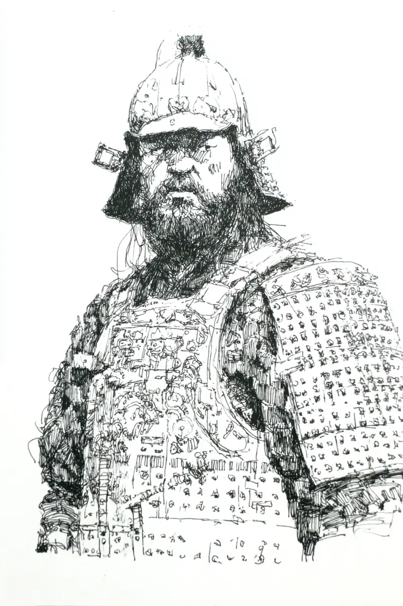

화살이 날아왔다.
[An arrow flew in.]
강무는 고개를 숙였다.
[강무 lowered his head.]
화살이 문에 박혔다.
[The arrow stuck into the gate.]
바로 그의 귀 옆이었다.
[It was right beside his ear.]
강무는 흑요수 성의 문 앞에 서 있었다.
[강무 stood in front of the gate of Obsidian Water Fort.]
문은 나무로 만들었다.
[The gate was made of wood.]
문은 크고 무거웠다.
[The gate was big and heavy.]
강무는 창을 두 손으로 잡았다.
[강무 held his spear with both hands.]
손이 떨렸다.
[His hands shook.]
무서워서가 아니었다.
[It was not because of fear.]
너무 추워서였다.
[It was because it was so cold.]
눈이 내렸다.
[Snow fell.]
땅은 하얗고 조용했다.
[The ground was white and quiet.]
하지만 벽 너머에서 소리가 들렸다.
[But a sound came from beyond the wall.]
적들이 오고 있었다.
[The enemies were coming.]
수백 명이었다.
[There were hundreds of them.]
강무는 삼일 동안 잠을 못 잤다.
[강무 had not slept for three days.]
성 안에는 물도 부족했다.
[Inside the fort, water was also short.]
하지만 문 뒤에는 마을이 있었다.
[But behind the gate there was a village.]
그 마을에는 아이들이 있었다.
[In that village there were children.]
문이 열리면 아이들이 죽는다.
[If the gate opens, the children die.]
그래서 강무는 문을 지켰다.
[So 강무 guarded the gate.]
강무 옆에 젊은 병사가 있었다.
[Beside 강무 there was a young soldier.]
이름은 민수였다.
[His name was 민수.]
민수는 열여섯 살이었다.
[민수 was sixteen years old.]
이것이 그의 첫 전투였다.
[This was his first battle.]
민수의 다리가 떨렸다.
[민수’s legs were shaking.]
“무서워요.”
[I am scared.]
민수가 작게 말했다.
[민수 said quietly.]
“괜찮아.”
[It is okay.]
강무가 말했다.
[강무 said.]
“내 뒤에 있어라.”
[Stay behind me.]
그때 첫 번째 적이 벽을 넘었다.
[Then the first enemy came over the wall.]
적은 칼을 들고 있었다.
[The enemy was holding a sword.]
적은 강무에게 달려왔다.
[The enemy ran at 강무.]
강무는 창을 내밀었다.
[강무 thrust his spear.]
창이 적의 배를 뚫었다.
[The spear pierced the enemy’s belly.]
적의 눈이 크게 커졌다.
[The enemy’s eyes grew wide.]
강무는 창을 뽑았다.
[강무 pulled the spear out.]
피가 쏟아졌다.
[Blood poured out.]
적은 눈 위로 쓰러졌다.
[The enemy fell onto the snow.]
하얀 눈이 빨갛게 변했다.
[The white snow turned red.]
민수는 그것을 보았다.
[민수 saw it.]
민수의 얼굴이 하얘졌다.
[민수’s face turned pale.]
“보지 마.”
[Do not look.]
강무가 말했다.
[강무 said.]
이제 적들이 더 많이 넘어왔다.
[Now more enemies came over.]
한 명, 두 명, 세 명.
[One, two, three.]
벽 위로 적들이 계속 올라왔다.
[The enemies kept climbing over the wall.]
강무는 창을 크게 휘둘렀다.
[강무 swung his spear widely.]
창이 한 적의 목을 쳤다.
[The spear struck one enemy’s neck.]
피가 하늘로 튀었다.
[Blood splashed into the air.]
적은 소리도 못 내고 죽었다.
[The enemy died without even making a sound.]
또 다른 적이 왔다.
[Another enemy came.]
강무는 창으로 그의 다리를 찔렀다.
[강무 stabbed his leg with the spear.]
적은 무릎을 꿇었다.
[The enemy dropped to his knees.]
강무는 창으로 그의 가슴을 찔렀다.
[강무 stabbed his chest with the spear.]
적은 움직이지 않았다.
[The enemy did not move.]
강무의 갑옷에 피가 묻었다.
[Blood got onto 강무’s armor.]
그의 수염에도 피가 묻었다.
[Blood got onto his beard too.]
피는 곧 얼음이 되었다.
[The blood soon turned to ice.]
너무 추웠다.
[It was so cold.]
강무의 뒤에서 적 하나가 벽을 넘었다.
[Behind 강무, one enemy came over the wall.]
그 적이 강무의 등을 칼로 찔렀다.
[That enemy stabbed 강무’s back with a knife.]
갑옷이 칼을 막았다.
[The armor stopped the knife.]
칼이 부러졌다.
[The knife broke.]
강무는 뒤로 돌았다.
[강무 turned around.]
강무는 적의 얼굴을 주먹으로 쳤다.
[강무 hit the enemy’s face with his fist.]
적의 코에서 피가 났다.
[Blood came from the enemy’s nose.]
강무는 적을 벽으로 밀었다.
[강무 pushed the enemy against the wall.]
그리고 창으로 적의 배를 찔렀다.
[And he stabbed the enemy’s belly with his spear.]
적은 벽에 기대어 미끄러졌다.
[The enemy slid down against the wall.]
피가 벽을 따라 흘렀다.
[Blood ran down along the wall.]
옆에서 다른 병사들도 싸웠다.
[Beside him other soldiers fought too.]
한 병사가 칼에 맞았다.
[One soldier was struck by a sword.]
그의 팔이 잘렸다.
[His arm was cut off.]
병사는 비명을 질렀다.
[The soldier screamed.]
땅에 팔이 떨어졌다.
[The arm fell to the ground.]
강무는 그쪽으로 달려갔다.
[강무 ran toward him.]
강무는 창으로 적을 밀었다.
[강무 pushed the enemy with his spear.]
적은 벽 아래로 떨어졌다.
[The enemy fell down below the wall.]
하지만 팔을 잃은 병사는 곧 죽었다.
[But the soldier who lost his arm soon died.]
피를 너무 많이 흘렸다.
[He bled too much.]
또 다른 병사가 소리쳤다.
[Another soldier shouted.]
그의 눈에 화살이 박혔다.
[An arrow stuck into his eye.]
그 병사는 앞을 볼 수 없었다.
[That soldier could not see ahead.]
적이 그를 칼로 베었다.
[An enemy cut him with a sword.]
병사는 눈 위로 쓰러졌다.
[The soldier fell onto the snow.]
강무는 그를 도울 수 없었다.
[강무 could not help him.]
적이 너무 많았다.
[There were too many enemies.]
강무는 이를 꽉 물었다.
[강무 clenched his teeth.]
“문을 지켜라!”
[Guard the gate!]
강무가 소리쳤다.
[강무 shouted.]
“문이 열리면 우리는 다 죽는다!”
[If the gate opens, we all die!]
강무는 잠깐 숨을 골랐다.
[강무 caught his breath for a moment.]
그의 팔이 아팠다.
[His arms hurt.]
손에 힘이 없었다.
[There was no strength in his hands.]
하지만 그는 창을 다시 잡았다.
[But he gripped his spear again.]
적들이 또 벽을 넘었다.
[The enemies came over the wall again.]
이번에는 더 많았다.
[This time there were more.]
강무는 앞으로 나갔다.
[강무 stepped forward.]
강무는 한 적의 손을 창으로 찔렀다.
[강무 stabbed one enemy’s hand with the spear.]
적의 손가락이 잘렸다.
[The enemy’s fingers were cut off.]
적은 칼을 떨어뜨렸다.
[The enemy dropped his sword.]
강무는 그의 목을 창으로 찔렀다.
[강무 stabbed his neck with the spear.]
적은 소리 없이 쓰러졌다.
[The enemy fell without a sound.]
그때 화살이 또 날아왔다.
[Then an arrow flew in again.]
화살이 민수의 다리에 박혔다.
[The arrow stuck into 민수’s leg.]
민수는 소리를 질렀다.
[민수 screamed.]
민수는 땅에 쓰러졌다.
[민수 fell to the ground.]
피가 눈 위로 흘렀다.
[Blood flowed onto the snow.]
강무는 민수를 문 뒤로 끌었다.
[강무 pulled 민수 behind the gate.]
“화살을 빼지 마.”
[Do not pull the arrow out.]
강무가 빠르게 말했다.
[강무 said quickly.]
“빼면 피가 더 나온다.”
[If you pull it out, more blood comes.]
민수는 고개를 끄덕였다.
[민수 nodded.]
민수의 얼굴은 하얗고 아팠다.
[민수’s face was pale and in pain.]
강무는 다시 문 앞으로 갔다.
[강무 went back in front of the gate.]
그때 큰 적이 벽을 넘었다.
[Then a big enemy came over the wall.]
그 적은 아주 컸다.
[That enemy was very big.]
그는 큰 도끼를 들고 있었다.
[He was holding a big axe.]
다른 적들이 뒤로 물러났다.
[The other enemies stepped back.]
큰 적이 강무를 보았다.
[The big enemy looked at 강무.]
강무도 그를 보았다.
[강무 looked at him too.]
큰 적이 도끼를 휘둘렀다.
[The big enemy swung his axe.]
강무는 옆으로 피했다.
[강무 dodged to the side.]
도끼가 문을 쳤다.
[The axe hit the gate.]
나무가 크게 갈라졌다.
[The wood split loudly.]
강무는 창으로 그를 찔렀다.
[강무 stabbed him with the spear.]
하지만 적의 갑옷이 두꺼웠다.
[But the enemy’s armor was thick.]
창이 갑옷을 뚫지 못했다.
[The spear could not pierce the armor.]
큰 적이 웃었다.
[The big enemy laughed.]
그는 도끼를 다시 휘둘렀다.
[He swung his axe again.]
도끼가 강무의 옆구리를 스쳤다.
[The axe grazed 강무’s side.]
갑옷이 찢어졌다.
[The armor tore.]
살이 깊게 베였다.
[The flesh was cut deep.]
강무는 신음했다.
[강무 groaned.]
숨을 쉬기가 힘들었다.
[It was hard to breathe.]
강무의 옆구리에서 피가 흘렀다.
[Blood flowed from 강무’s side.]
강무는 아팠다.
[강무 was in pain.]
하지만 물러나지 않았다.
[But he did not step back.]
강무는 창을 버렸다.
[강무 threw away his spear.]
강무는 칼을 뽑았다.
[강무 drew his sword.]
큰 적이 또 도끼를 들었다.
[The big enemy raised his axe again.]
그때 강무가 앞으로 달려들었다.
[Then 강무 rushed forward.]
강무는 적의 목을 칼로 베었다.
[강무 cut the enemy’s neck with his sword.]
갑옷은 목을 지키지 못했다.
[The armor did not protect the neck.]
피가 강무의 얼굴로 튀었다.
[Blood splashed onto 강무’s face.]
큰 적은 도끼를 떨어뜨렸다.
[The big enemy dropped his axe.]
그는 목을 손으로 잡았다.
[He grabbed his neck with his hands.]
하지만 피는 멈추지 않았다.
[But the blood did not stop.]
큰 적은 무릎을 꿇었다.
[The big enemy fell to his knees.]
그리고 눈 위로 쓰러졌다.
[And he fell onto the snow.]
강무는 숨을 크게 쉬었다.
[강무 breathed hard.]
강무의 옆구리는 계속 아팠다.
[강무’s side kept hurting.]
피가 다리까지 흘렀다.
[Blood flowed down to his leg.]
강무는 주위를 보았다.
[강무 looked around.]
땅에 많은 시체가 있었다.
[There were many bodies on the ground.]
적의 시체도, 병사의 시체도 있었다.
[There were enemy bodies and soldier bodies too.]
눈은 이제 하얗지 않았다.
[The snow was no longer white.]
눈은 빨갰다.
[The snow was red.]
강무는 문을 등지고 섰다.
[강무 stood with his back to the gate.]
적들이 다시 모였다.
[The enemies gathered again.]
강무는 칼을 들었다.
[강무 raised his sword.]
그의 팔은 무거웠다.
[His arms were heavy.]
하지만 그는 문을 떠나지 않았다.
[But he did not leave the gate.]
“와라.”
[Come.]
강무가 낮게 말했다.
[강무 said in a low voice.]
그때 멀리서 뿔피리 소리가 들렸다.
[Then a horn sounded from far away.]
적들이 멈췄다.
[The enemies stopped.]
그것은 후퇴 신호였다.
[It was the signal to retreat.]
적들이 벽 뒤로 물러났다.
[The enemies pulled back behind the wall.]
한 명씩, 한 명씩 사라졌다.
[One by one, they disappeared.]
곧 조용해졌다.
[Soon it became quiet.]
다시 눈만 내렸다.
[Again only the snow fell.]
강무는 주위의 병사들을 세었다.
[강무 counted the soldiers around him.]
아침에는 오십 명이었다.
[In the morning there were fifty.]
이제 열두 명만 살아 있었다.
[Now only twelve were alive.]
많은 젊은 병사들이 눈 위에 누워 있었다.
[Many young soldiers lay on the snow.]
그들은 다시 일어나지 않았다.
[They did not get up again.]
강무는 잠깐 눈을 감았다.
[강무 closed his eyes for a moment.]
강무는 무릎을 꿇었다.
[강무 dropped to his knees.]
칼이 손에서 떨어졌다.
[The sword fell from his hand.]
옆구리가 너무 아팠다.
[His side hurt so much.]
민수가 문 뒤에서 기어 나왔다.
[민수 crawled out from behind the gate.]
“장군님, 살아 계세요?”
[General, are you alive?]
민수가 물었다.
[민수 asked.]
강무는 천천히 고개를 들었다.
[강무 slowly lifted his head.]
강무는 문을 보았다.
[강무 looked at the gate.]
문은 갈라지고 부서졌다.
[The gate was split and broken.]
하지만 문은 아직 서 있었다.
[But the gate was still standing.]
문은 열리지 않았다.
[The gate had not opened.]
강무는 작게 웃었다.
[강무 smiled a little.]
“살아 있다.”
[I am alive.]
강무가 말했다.
[강무 said.]
“그리고 문도 살아 있다.”
[And the gate is alive too.]
눈이 그들 위로 조용히 내렸다.
[The snow fell quietly over them.]
흑요수 성의 문은 열리지 않았다.
[The gate of Obsidian Water Fort did not open.]